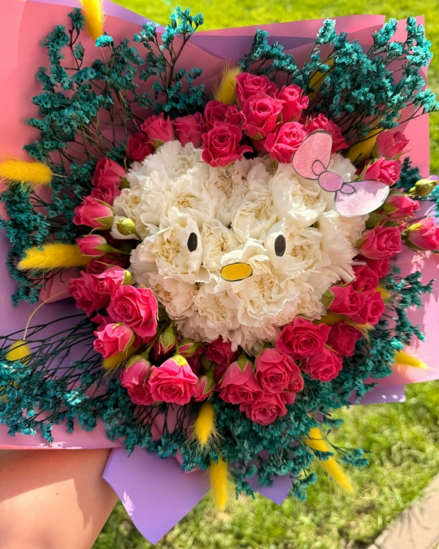

Свежие букеты с доставкой
Мы - цветочная мастерская «ByKot». Создаём композиции из свежих цветов каждый день и рады помочь с выбором подарка на любое событие: день рождения, свадьбу или просто хорошее настроение.
Наш основной канал связи и заказов - группа ВКонтакте: vk.ru/bykotflowers.
Перейти в каталог Мы во ВКонтактеПочему выбирают нас
- Только свежие цветы от проверенных поставщиков
- Доставка по городу за 2 часа
- Индивидуальный дизайн каждого букета
- Быстрая связь и оформление заказа через ВКонтакте

Заказать букет во ВКонтакте
Все актуальные букеты, цены и акции смотрите в нашей группе vk.ru/bykotflowers. Там же можно написать нам в личные сообщения и оформить заказ.